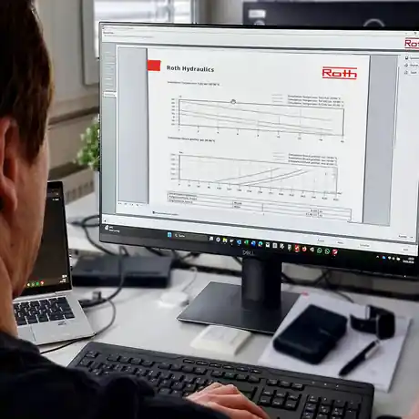

Roth-techniek met een Nederlandse commerciële en technische route.
Hobo Hydrauliek B.V. verzorgt als officiële distributeur voor Nederland de intake, productselectie, offertebegeleiding en praktische afstemming rondom Roth Hydraulics.

Begin bij de systeemfunctie.
Een goede accumulatorselectie vraagt meer dan alleen druk en nominale inhoud. Hobo Hydrauliek verzamelt de relevante bedrijfsdata en stemt de product- of systeemroute af.
Van vraag naar passende configuratie.
Ook wanneer nog niet duidelijk is welk accumulatortype nodig is, kan de aanvraag op functie worden gestart.
Intake
Functie, druk, volume, medium, temperatuur, cycli en omgeving.
Voorselectie
Membraan, blaas, zuiger, drukvat of compleet accumulatorsysteem.
Technische afstemming
Uitvoering, aansluiting, materiaal, accessoires en eventuele monitoring.
Offerte
Hobo Hydrauliek verzorgt de Nederlandse offerte- en contactroute.
Een bestaande installatie, vervanging of nieuw project?
Stuur merk/typegegevens, foto’s of systeemdata mee in uw aanvraag.